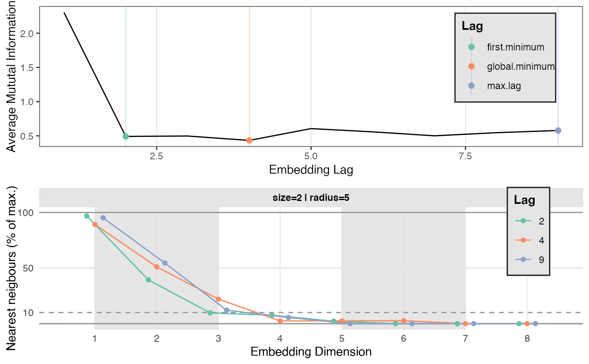

Find optimal parameters for constructing a Recurrence Matrix. A wrapper for various algorithms used to find optimal values for the embedding delay and the number of embedding dimensions.
est_parameters( y, lagMethods = c("first.minimum", "global.minimum", "max.lag"), estimateDimensions = "preferSmallestInLargestHood", maxDim = 10, emLag = NULL, maxLag = floor(NROW(y)/(maxDim + 1)), minVecLength = 20, nnSize = NA, nnRadius = sd(y)/10, nnThres = 10, theiler = 0, doPlot = TRUE, silent = TRUE, ... )
| y | A numeric vector or time series |
|---|---|
| lagMethods | A character vector with one or more of the following strings: |
| estimateDimensions | Decide on an optimal embedding dimension relative to the values in
|
| maxDim | Maximum number of embedding dimensions to consider (default = |
| emLag | Optimal embedding lag (delay), e.g., provided by an optimising algorithm. If |
| maxLag | Maximum embedding lag to consider. Default value is: |
| minVecLength | The minimum length of state space vectors after delay-embedding. For short time series, this will affect the possible values of |
| nnSize | Neighbourhood diameter (integer, the |
| nnRadius | Points smaller than the radius are considered neighbours (default = |
| nnThres | Threshold value (in percentage 0-100) representing the percentage of Nearest Neighbours that would be acceptable when using N surrogate dimensions. The smallest number of surrogate dimensions that yield a value below the threshold will be considered optimal (default = |
| theiler | Theiler window on distance matrix (default = |
| doPlot | Produce a diagnostic plot the results (default = |
| silent | Silent-ish mode |
| ... | Other parameters passed to |
A list object containing the optimal values (as indicated by the user) and iteration history.
A number of functions are called to determine optimal parameters for delay embedding a time series:
Embedding lag (emLag): The default is to call est_emLag(), which is a wrapper around nonlinearTseries::timeLag() with technique=ami to get lags based on the mutual information function.
Embedding dimension (m, emDim): The default is to call est_emDim(), which is a wrapper around tseriesChaos::false.nearest()
Other Estimate Recurrence Parameters:
est_emDim(),
est_emLag(),
est_parameters_roc(),
est_radius()
#> #> #>